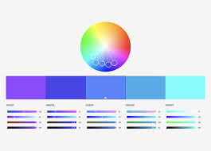
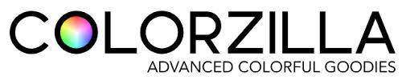

MODULO 2 DE HTML E CSS
CAP 13
CORES
Uma boa apresentação de um site é por suas cores. Um site chama mais a atenção de um cliente na maioria das
vezes por suas cores e apresentações.
O ser humano tem um instinto natural de prestar mais atenção em uma coisa por causa de sua cor.
Por
exemplo, uma pessoa acha muito mais interessante uma flor vermelha do que uma flor marrom, né?
*PSICOLOGIA DAS CORES
A psicologia das cores examina como o cérebro humano transforma cores em sensações e emoções. Esse estudo é
amplamente utilizado em áreas como marketing, publicidade, design, onde as cores são escolhidas
estrategicamente para evocar determinadas respostas emocionais e comportamentais.
UMA FERRAMENTA MUITO IMPORTANTE PARA CRIAÇÃO DE PALETAS DE CORES É O (ADOBE COLOR)

PALETA DE CORES
#58C0B2
#5D968E
#44EAD4
#576E6B
#36413F
#233331
FERRAMENTA DE PEGAR QUALQUER COR EM QUALQUER SITE NO GOOGLE

CRIANDO DEGRADÊ EM CSS!!!!
TIPOGRAFIAS
CAP 14
✦ O termo tipografia foi criado no século 15 quando surgiu a imprensa.
✦ Antes de surgir a prensa mecânica, os livros eram copiados à mão por pessoas chamadas MONGES COPISTAS,
que copiavam o livro todo à mão.
✦ Em 1450, um inventor alemão chamado JOHANNES GUTENBERG (O REI DA IMPRENSA) criou a prensa mecânica, que
por ventura aumentava muito a produção dos livros.
✦ Foi aí que surgiu o termo tipografia, quando eles tentaram melhorar as letras da prensa.
✦ O termo vem de 2 palavras gregas ↓
⋆ tipo = týpo = impressão
grafia = graphia = escrita
✦ A forma de escrever também traz emoções e é uma das coisas mais importantes do design.
Anatomia da fonte
✦ A letra base para uma fonte é a letra X minúscula, pois todas as letras minúsculas devem
ter seu tamanho.

Como visto na imagem acima, todas as letras minúsculas têm o mesmo tamanho de X.
✦ Algumas fontes têm um "pezinho" na letra; esse pezinho se chama SERIFA, que para o cérebro
humano dá uma maior facilidade de entendimento.
EXEMPLO DE SERIFA ABAIXO
✦ O cérebro humano tem a capacidade de ler uma palavra apenas pela primeira e última letra da palavra,
todas as outras letras podem estar erradas que nosso cérebro só vai perceber se prestarmos muita atenção.
COMO PODE VER NO EXEMPLO ABAIXO

Uma fonte também possui uma anatomia como o corpo humano, ela tem que ser toda bem construída para que possa ser
atraente para nosso cérebro.

Temos também as categorias de fontes que podem ser mudadas de acordo com o assunto a ser tratado. A FONTE DE UM
JOGO NÃO PODE SER A MESMA FONTE DE UM CONTRATO, NÉ?

A categoria também tem a ver com sua construção.
Trabalhando com fontes
Tem como mudar a fonte linha por linha ou o BODY todo.
Em alguns dispositivos, algumas fontes não funcionam (CELULARES, TABLETS...), mas em computadores é muito
difícil de acontecer.
Para não ter erro, o próprio VS CODE dá as combinações de fontes que funcionam em todos os dispositivos, a menos
que eu queira criar uma fonte muito detalhada, aí ele não vai me ajudar...
TAMANHOS DE FONTES
- MEDIDAS ABSOLUTAS
- cm (centímetro): Às vezes, o dispositivo não lê em centímetro (a apresentação vai ser diferente).
- mm (milímetro): O mesmo vale para o milímetro.
- in (polegada): Dispositivos têm polegadas diferentes, então a apresentação vai mudar.
- px (pixel): Até para o pixel, em telas com um grau de pixel mais alto, um pixel pode ser 1/4 de um
pixel normal, como nas telas de retina.
- pt (ponto): Não recomendado usar em material impresso em telas.
- pc (paica): Não recomendado usar em material impresso em telas.
- MEDIDAS RELATIVAS
- em (MEDIDA RELATIVA AO TAMANHO ATUAL DA FONTE)
- ex (RELATIVA À ALTURA X DE UMA FONTE)
- rem (RELATIVA À FONTE CONFIGURADA NO BODY)
- vw (LARGURA DO VIEWPORT, OU LARGURA DA TELA)
- vh (ALTURA DA TELA)
- %
É recomendado apenas o PX e EM, as outras medidas não são recomendadas em sites.
O tamanho normal de uma fonte de um site é de 16px ou 1em.
Pois 16px é 1em.
PESO, ESTILOS E SHORTHAND
O PESO É QUANDO DEIXAMOS A FONTE MAIS GROSSA OU MAIS FINA.
*IMPORTANTE
Tem uma forma de editar uma fonte que se chama SHORTHAND, que permite editar várias coisas em uma fonte em
apenas uma linha de código.
TEM QUE SEGUIR EXATAMENTE ESSA ORDEM PRA DAR CERTO
font: font-style
font-weight font-size font-family ;
EXEMPLO
font: italic bolder 25px arial;
UTILIZANDO FONTES EXTERNAS
PARA COLOCAR UMA FONTE EXTERNA É SÓ IR NO SITE GOOGLE FONTS, PEGAR O CÓDIGO INPUT DA
FONTE E COLOCAR NA TAG STYLE EM HTML.
NÃO TÁ FUNCIONANDO, NÃO SEI PORQUE...
Consegui colocar, mas apenas em CSS.
NÃO GOSTEI MUITO DESSA MANEIRA, ACHO QUE EDITAR UMA FONTE EM CSS É BEM MAIS FÁCIL.
FONTES EXTERNAS BAIXADAS
TEM VÁRIOS SITES PARA BAIXAR FONTES, MAS EU IREI USAR O DAFONT.COM.
Tem que ficar esperto pois tem algumas fontes que não têm acentuação, então isso prejudica o texto,
né?
Quando escolher a fonte, é só extrair e colocar dentro da pasta do site; depois, é só colocar no código.
AGORA DENTRO DAS LINHAS DE CÓDIGO, É SÓ COLOCAR UM @font-face DENTRO DE style, TEM QUE SER LOGO EM
CIMA, POIS COISAS QUE TÊM O @ TÊM MAIS IMPORTÂNCIA.
ALINHAMENTO DE TEXTO EM CSS
SELETORES PERSONALIZADOS EM CSS
CAP 15
Agora que nós já passamos pelos elementos mais importantes do design, que são as cores, as imagens e as fontes,
vamos falar um pouco sobre formatações especiais que vão permitir organizar esses conteúdos na tela, indicando
seus tamanhos, espaçamentos, sombras e tudo mais.
PARA PERSONALIZAR DETERMINADO ELEMENTO QUE SE REPETE, É SÓ CRIAR UMA TAG DE IDENTIFICAÇÃO PARA ELA. ESSA TAG SE
CHAMA id E ELA VAI DENTRO DA TAG ESCOLHIDA.
EXEMPLO COM UMA TAG H1 QUE ESTÁ SENDO USADA E EDITADA VÁRIAS VEZES, EU IREI EDITAR APENAS ELA COM
CSS
Esse h1 será diferente de todos os outros por causa dessa tag
NÃO PODE REPETIR O id. SE USOU UMA VEZ, NÃO VAI PODER USAR DE NOVO. ATÉ FUNCIONA, MAS A W3C NÃO APOIA O USO.
✦ Funcionar não significa que está certo
A diferença de id e class
A diferença é que o id só pode personalizar um elemento, já a class serve para vários.
exemplo de class
teste verde
teste amarelo
teste verde
teste amarelo
AQUI TEM UMA CLASS QUE ERA PARA SER VERDE E OUTRA AMARELA. COM ISSO, EU POSSO EDITAR QUANTOS ELEMENTOS EU QUISER
COM class.
✦ também pode aplicar mais de uma class em um elemento
PSEUDO CLASSES
UMA PSEUDO CLASSE ESTÁ VINCULADA AO ESTADO DO ELEMENTO (SE ELE ESTÁ VAZIO, SE ESTÁ MARCADO, COMO VAI AGIR
AO PASSAR O MOUSE NELE...)
COMO OS QUADRADOS ACIMA, QUE MUDAM DE COR QUANDO PASSAMOS O MOUSE NELES, NISSO FOI USADA ESSA PSEUDO CLASSE
div:hover { background-color: #dd00ff; }
LINKS
PERSONALIZANDO LINKS
Como pode ver acima, o link que não foi aberto fica de uma cor diferente das outras três. Isso ocorre por causa
da PSEUDO-CLASS visited, que mostra o link que foi aberto ou não.
a:visited { }
PSEUDO ELEMENTOS
Os pseudo-elementos mexem especificamente no conteúdo do elemento.
Ele é ativado com :: (dois pontos
duplos)
EXEMPLOS ABAIXO
Como pode ver acima, tem um nome LINK que está em laranja. Ele foi colocado por um pseudo-elemento que se chama
after, que significa DEPOIS. Isso é, depois do link vai acontecer tal coisa. Foi colocado também um
content, que significa CONTEÚDO.
Já essas estrelinhas que estão nos links vêm do pseudo-elemento before, que significa ANTES, no que
quer dizer que vem antes do conteúdo. (⁂⁂⁂⁂)
MODELOS DE CAIXA
CAP 16
⁂ Entender o modelo de caixas é um dos primeiros passos para construir uma interface web e começar a dar forma
aos seus sites. Agora chegou a hora de organizar tudo em caixas configuráveis e começar a desenhar nossas páginas.
Uma caixa é um conceito baseado na expressão "box model". A grande maioria dos elementos HTML que temos no nosso
site são como caixas. Elas são "containers" que armazenam conteúdo, ou até mesmo outras caixas.
ANATOMIA DE UMA CAIXA

height ⇒ Altura
width ⇒ Largura
border ⇒ Linha que circula meu conteúdo (linha que vai ficar grudada no conteúdo)
padding ⇒ É o que dá uma distância entre a linha (border) e o conteúdo
margin ⇒ Fica do lado de fora do border (se tiver um elemento ao lado ou abaixo do outro, eu uso
margin para distanciar)
⇑ ESSES SÃO OS ELEMENTOS DA ANATOMIA DE UMA CAIXA
MODELOS DE CAIXA
Tudo aquilo que é exibido em um HTML é um estilo de caixa.
Na maioria das vezes, são caixas dentro de outras, isso faz uma hierarquia de caixas.
Quando colocamos um código dentro de outro, vamos chamar de aninhamento.
Os dois tipos de caixas
box-level = Ele sempre vai começar em uma linha nova, e também vai ocupar toda a largura da tela.
EX: div, h1-h6, p, main, header, nav, footer, vídeo...

inline-level = Ele vai começar na mesma linha, e vai ser do tamanho necessário que o objeto vai
ocupar, e também não vai quebrar a linha.
EX: span, a, code, small, strong, em, label, button, input...
EXEMPLO DE CAIXAS NA PRÁTICA
box-level
exemplo de caixa box-level h1
esse também é um exemplo de box-level p
esse também é um box-level a
grouping tags (tags de agrupamento)
Basicamente as tags de agrupamento sempre foram duas
div e span
A div é do tipo de box-level.
A span é do tipo de inline-level.
Muito se usa a div para organizar tudo, mas não fica organizado.
É mais organizado usar as formas semânticas do HTML
EX
header = cabeçalho
main = parte principal do site
footer = rodapé do site
nav = para colocar links
Essas tags mencionadas acima são todas div especiais.
Elas não vão fazer nenhuma mudança de style no site, servem apenas para organizar (MAS TODAS PODEM SER EDITADAS
EM CSS)
MODIFICANDO BORDER
Usando a tag border-radius, conseguimos colocar bordas na box, mas para modificar cada lado separadamente usamos
uma shorthand, na qual vai ser:
border-radius: (primeiro) (segundo) (terceiro) (quarto)
- primeiro = essa medida vai modificar o lado superior esquerdo
- segundo = essa medida vai modificar o lado superior direito
- terceiro = essa medida vai modificar o lado inferior direito
- quarto = essa medida vai modificar o lado inferior esquerdo
CAPÍTULO 16 FINALIZADO
MEU PROJETO DESSE CAPÍTULO 16 FOI ESSE
projeto one piece
CAPITULO 17
primeiro projeto
Nesse capitulo criei um site sobre o android, e falando sobre ele, como foi criado, sua histtoriae etc.
apredi varias coisas que escrevi no caderno